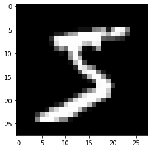

4.6. 手書き数字認識¶
機械学習で問題を解くときは、「学習」と「推論」の2つのフェーズで行います。
ニューラルネットワークでは、「学習」は「訓練データ(学習データ)」を使用して重みパラメーターの学習を行い、「推論」では学習した重みパラメーターを使って、入力データの分類を行います。
4.6.1. MNISTデータセット¶
今回は、MNISTデータセット (えむにすと)と呼ばれる、機械学習の分野で最も有名なデータを使います。
MNISTデータセットは、0から9までの数字画像から構成されています。
28 x 28のグレー画像 (1チャンネル)
1ピクセルに 0 ~ 255 までの値
4.6.2. データを表示してみる¶
.. include:: ./6.MNIST/mnist_show.py[1]:
# coding: utf-8
import sys, os
sys.path.append(os.path.abspath(os.path.join('..', 'sample')))
import numpy as np
from dataset.mnist import load_mnist # サンプルにあるPythonモジュール
from PIL import Image
import matplotlib.pyplot as plt
def img_show(img):
'''
NumPy用になっているデータをPIL用イメージ画像に変換して、表示します
'''
pil_img = Image.fromarray(np.uint8(img))
# pil_img.show()
plt.imshow(pil_img, cmap='gray')
# load_mnist で読み込む
# (訓練画像、訓練ラベル), (テスト画像, テストラベル) という形式で MNISTデータを返す
(x_train, t_train), (x_test, t_test) = load_mnist(flatten=True, normalize=False)
# 訓練画像と訓練ラベルを取り出す
img = x_train[0]
label = t_train[0]
print("label: ", label)
# 訓練画像は flatten=True…データを1次元配列にしている
print("img.shape: ", img.shape)
# 形状を元の画像サイズに変形
img = img.reshape(28, 28)
print("img.shape: ", img.shape)
# 画像を表示する
img_show(img)
label: 5
img.shape: (784,)
img.shape: (28, 28)

4.6.3. ニューラルネットワークの推論処理¶
入力層は784
画像の大きさ\(28 \times 28 = 784\)より
出力層は10
0 ~ 9 の数字を出すため
隠れ層は2つ、一つは50, もう一つは100
任意の値で設定可能
[2]:
# coding: utf-8
import sys, os
sys.path.append(os.path.abspath(os.path.join('..', 'sample')))
import numpy as np
import pickle
from dataset.mnist import load_mnist
from common.functions import sigmoid, softmax
def get_data():
# 正規化されたデータとして前処理を行う
(x_train, t_train), (x_test, t_test) = load_mnist(normalize=True, flatten=True, one_hot_label=False)
return x_test, t_test
def init_network():
with open(os.path.abspath(os.path.join('..', 'sample', 'ch03', "sample_weight.pkl")), 'rb') as f:
network = pickle.load(f)
return network
def predict(network, x):
W1, W2, W3 = network['W1'], network['W2'], network['W3']
b1, b2, b3 = network['b1'], network['b2'], network['b3']
a1 = np.dot(x, W1) + b1
z1 = sigmoid(a1)
a2 = np.dot(z1, W2) + b2
z2 = sigmoid(a2)
a3 = np.dot(z2, W3) + b3
y = softmax(a3)
return y
# MNIST データセットの取得
x, t = get_data()
# ニューラルネットワークの構築
network = init_network()
# MNISTデータの画像を分類し
# 確率の高いものを予測結果に入れる
accuracy_cnt = 0
for i in range(len(x)):
y = predict(network, x[i])
p= np.argmax(y) # 最も確率の高い要素のインデックスを取得
if p == t[i]:
accuracy_cnt += 1
# ニューラルネットワークの認識制度
print("Accuracy:" + str(float(accuracy_cnt) / len(x)))
Accuracy:0.9352
4.6.4. バッチ処理¶
入力データを複数にまとめて、一度に計算させる
一つ一つ計算するよりは高速化が可能
まとまった入力データを「バッチ」という
バッチが多いと逆に遅くなったり、そもそもメモリが足りなくなったりする場合もあるので、必ずバッチ処理をしなければならない、というわけではない
[3]:
x, t = get_data()
network = init_network()
batch_size = 100 # バッチの数
accuracy_cnt = 0
for i in range(0, len(x), batch_size):
x_batch = x[i:i+batch_size]
y_batch = predict(network, x_batch)
p = np.argmax(y_batch, axis=1)
accuracy_cnt += np.sum(p == t[i:i+batch_size])
print("Accuracy:" + str(float(accuracy_cnt) / len(x)))
Accuracy:0.9352